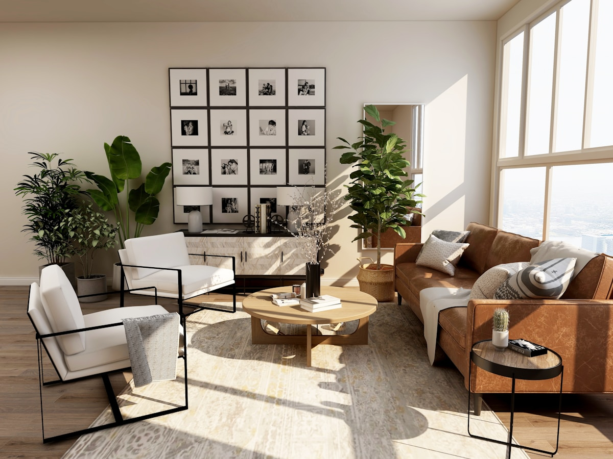
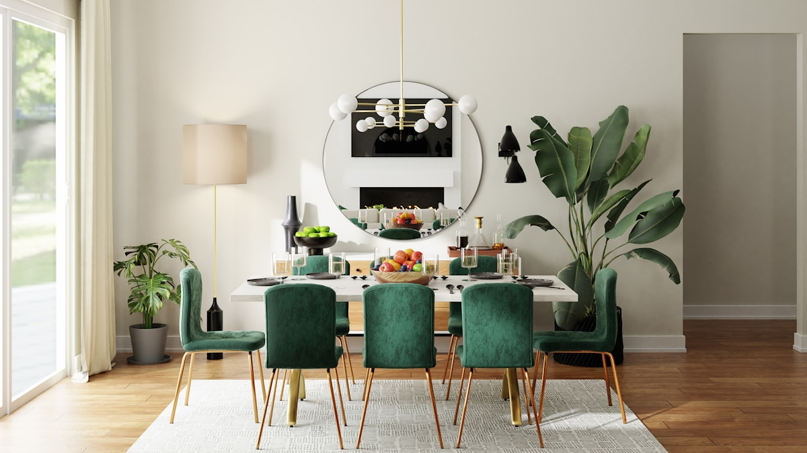

01 / Living — Kemang House
Kami merancang interior rumah yang tidak berhenti pada “cantik”. Setiap ruang dibentuk dari ritme hidup, koleksi barang, cahaya, kebiasaan, dan cara keluarga bergerak di dalam rumah.
Bahas rumah saya ↗


Layout dimulai dari aktivitas nyata, bukan gambar referensi.
Karakter hadir lewat proporsi, tekstur, dan detail—bukan dekorasi berlebihan.
Material, storage, dan furniture disiapkan untuk dipakai setiap hari.

Fokus pada sirkulasi, titik duduk, penyimpanan tersembunyi, dan cahaya sore yang tetap terasa hangat.
Kami mendengar cara Anda hidup, bukan hanya style yang Anda suka.
Layout, flow, storage, dan prioritas ruang diselesaikan lebih dulu.
Material, custom furniture, pencahayaan, detail, dan budget dikunci.
Koordinasi produksi, instalasi, dan finishing sampai ruang siap digunakan.
“Kami tidak mencari gaya. Kami mencari alasan kenapa ruang itu harus seperti itu.”
Bisa. Scope dapat berupa desain saja atau design & build, tergantung kebutuhan.
Bisa untuk area tertentu seperti living room, master bedroom, workspace, atau area komersial kecil.
Ya. Range budget perlu diketahui sejak awal agar arah material dan detail realistis untuk dibangun.
Kirim denah, foto kondisi sekarang, dan area yang ingin ditata. Kami mulai dari situ.
Kirim denah & foto ↗